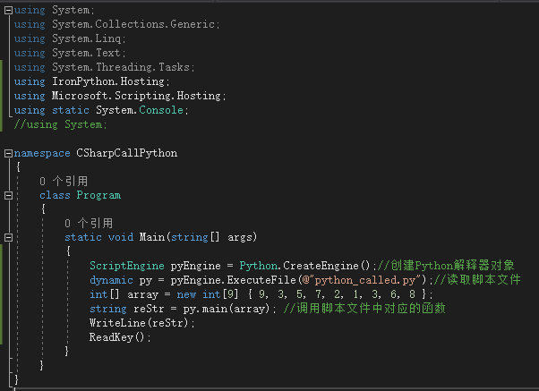
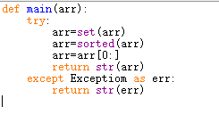
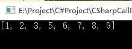

引用：https://www.cnblogs.com/zoe-yan/p/10374757.html
利用vs2017c#调用python脚本需要安装IronPython。我是通过vs2017的工具->NuGet包管理器->管理解决方案的NuGet包，搜索IronPython包安装，也可以在官网下载安装包自行安装后添加引用即可。
创建一个控制台应用程序，安装完IronPython包后编辑程序：

python脚本程序：

运行后得到结果：
需要注意的是，c#调用python脚本时，如果python脚本不放在工程目录下，要写python脚本的完整路径，如：E:\Project\C#Project\CSharpCallPython\python_called.py；
图中没有写完整路径，python脚本应放在工程目录的bin->debug文件夹下，才能读取到文件。